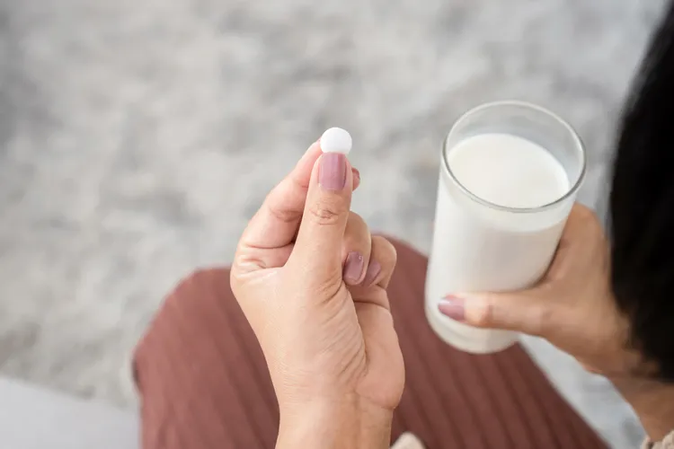
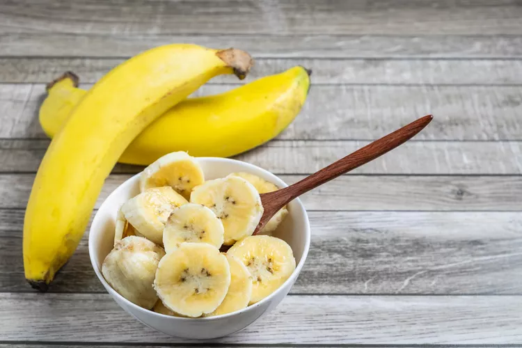
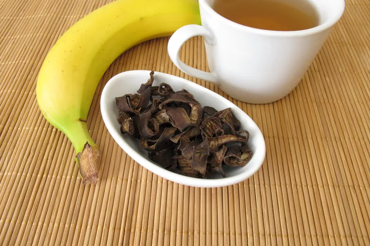

Latest Sleep Stories

Supplements
Supplements You Should Never Take With Milk
Iron, zinc, and magnesium absorption can be blocked by calcium. Here's how to time them right.

Diet and Nutrition
9 Foods With More Potassium Than a Banana - Ranked Highest to Lowest
Avocado, Swiss chard, and baked potato all beat the banana's potassium count.

Diet and Nutrition
Banana Peel Tea: A Natural Sleep Remedy Worth Trying Tonight
Rich in tryptophan, magnesium, and potassium, the peel contains more magnesium than the fruit.